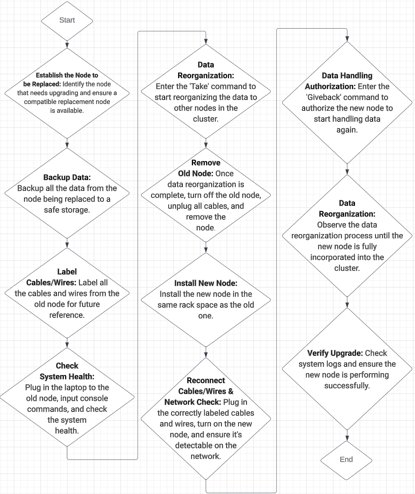
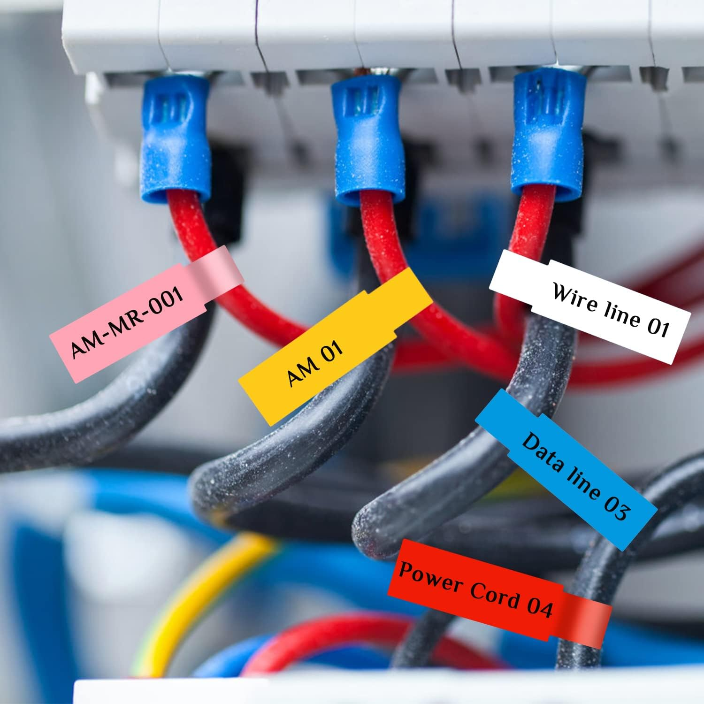
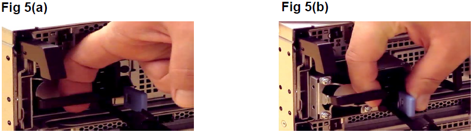
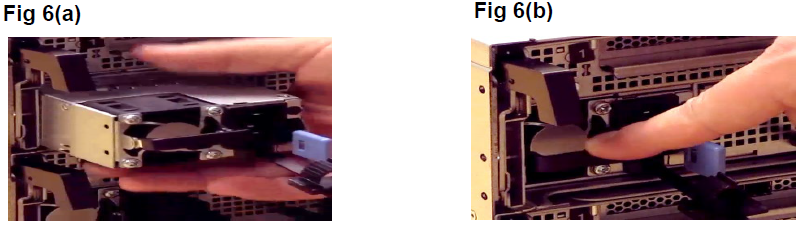
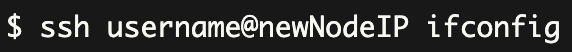

Jaaziah Espinoza
DePaul University
Professor Aleshia Jefferson
November 18, 2023
Upgrading Node from Solidfire to HCI
Upgrading a node from SolidFire to HCI (Hyper-Converged Infrastructure) can provide numerous benefits. HCI integrates compute, storage, and networking into a single system, simplifying management and enabling better scalability. It also improves performance and efficiency by allowing workloads to share resources. SolidFire, while excellent for storage, doesn't offer these integrated capabilities. By upgrading to HCI, you can enjoy a more seamless, scalable, and efficient infrastructure, ideal for businesses seeking to modernize their IT environment. Use this document to upgrade a node from a Solidfire infrastructure to a Hyper-Converged Infrastructure (HCI).
Caution:
If something goes wrong during the process of upgrading a node from SolidFire to HCI, there are several steps you should follow:
- Check the Logs: Review the system logs for any error messages or warnings that might indicate what went wrong during the upgrade.
- Check the Hardware: Make sure all cables, wires, and components are properly connected and functioning. If any hardware was recently added or replaced, ensure it's compatible with your system.
- Review the Steps: Go back through the upgrade process to ensure all steps were completed in the correct order. Ensure that you've properly backed up data, confirmed the functionality of all disk drives, and correctly performed the 'take over' and 'give back' commands.
- Consult Technical Documentation: Refer to the technical documentation provided by your HCI provider. These documents often have troubleshooting guides that can help identify and resolve common problems.
- Contact Support: If you're unable to resolve the issue on your own, it may be time to contact your HCI provider's support team. They can provide expert assistance and guide you through the process of troubleshooting and resolving your issue.
About this task
It is essential to input the commands on the correct node in the correct order.
The old node is the one that is getting replaced.
The upgrade node is the new node, replacing the old node.
The healthy node is the node assisting with the commands
You must always record the console's outputs to a text file for future troubleshooting throughout the procedure.
You can not replace any drives or disk shelves during the course.
The replacement node must be compatible with the current system.
Preparing for Replacement
You must review the prerequisites needed to complete this procedure:
Compatible Replacement Node
Network Access
Tools for Hardware Installation
Technical Documentation
Workflow Diagram

Before You Begin
Do the following:
- Backup storage for data on the old node
- Confirm all disk drives are fully functional

- Confirm that the healthy node is able to do the essential command of ‘take over’ and ‘give back’
Procedure: Upgrade Node
Follow these steps to replace a node from SolidFire to HCI:
- Establish the node that needs replacing and ensure a compatible replacement node.
- Backup all the data from the node being replaced to a safe backup storage.
- Once Steps 1 and 2 are confirmed, label all the cables and wires from the old node to re-input them in the same order into the new node in the future.

- Plug the laptop into the old node to input console commands and observe. Check system health with the command below, then proceed.
- Enter the "Take" command to start reorganizing the data to other nodes in the cluster, safeguarding no data loss throughout the upgrade process.
- Observe the data reorganization process, and when it is done, the system shows the node is no longer involved within any of the clusters.
- Once Step 6 is confirmed, turn off the old node, unplug all cables and wires and pull the node out completely.

- Install the new node in the same place as the old one within the rack.

- Plug in correctly labeled cables and wires into the new node, then turn it on and double-check the new node is detectable on the network and working correctly.

- Enter the "Giveback" command to authorize the new node to start handling data again.
- Observe the data reorganization method up till the new node is wholly joined into one of the clusters.
- Authenticate the upgrade by checking system logs and making sure the new node is performing successfully.
Use this "Upgrading Node from Solidfire to HCI " instructional to complete a node replacement.